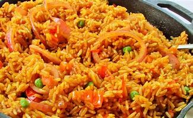

Dezi's Recipe:JOLLOF RICE
Nigerian jollof rice recipe! This African dish is packed full of flavor,rich,grainy,smoky,delicious and the best.
It's a one pot dish that is made with rice,tomato,peppers,herbs,and spices. Learn how to make jollof rice in easy steps.
Nigerian Jollof Rice Recipe:

This Nigerian Jollof Rice recipe is the best you will find on the internet. It is a detailed step-by-step process that simplifies the cooking process so that anyone be it a beginner cook or pro cook can cook it to PERFECTION!
- Most important RICE
- Bell pepper,Tomatoes,Onions,Tomato puree,
- Vegetable Oil
- Curry powder, Dried thyme
- Scotch bonnet
- stock cubes,chicken broth
- Salt
- Butter
HOW TO MAKE JOLLOF RICE:
Here's a detailed step by step on how to cook jollof rice;
- First,blend the bell peppers,tomatoes,scotch bonnet,and onions.
- Place a pot on the heat, add oil into the poy, then add in sliced onions.
Stir the onions till they are fragrant and translucent. This should take about 2minutes
- Next, add in the tomato puree/tomato paste.
Fry for 5-10minutes till reduced in quantity and doesn't taste tart.
- Add in the blended peppers and onion, curry powder,dried thyme,stock cubes,bay leaves and salt.
Fry till it is dark red and no longer raw. It will be reducd in quantuty, thick and the oil floats to the top of the sauce. This takes abouth 10-20minutes depending on quantity.
- Then add in the chicken broth, and boiling water. Stir,add in the washed rice.
Cover the pot tightly and cook the rice on low heat till it's almost tender.(about 25minutes)
- Add some sliced onion,sliced tomato and 2tablespoons of butter(or more depending on the quantity of rice)
- Cover the pot and conyinue to steam the rice till it's tender.
- Stir the rice and take it off the heat
Serve and enjoy!!!!!!